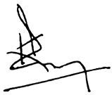

Stewardship
Audit Committee Report


The principal purpose of the Audit Committee is to assist the Board in discharging its responsibilities to monitor the integrity of the Group’s Financial Statements. In addition, the Committee reviews the adequacy and effectiveness of the Group’s systems of internal control, monitors the effectiveness, performance and objectivity of the Internal and External Auditors, and evaluates SLT’s revenue assurance capabilities and risk assessment.
The Committee also reviews the internal controls and risk management of subsidiary companies except Mobitel (Pvt) Ltd., which has its own Audit Committee.
Role and responsibilities
- Monitor the integrity of SLT’s Financial Statements and review any formal announcement relating to the Company’s financial performance prior to submission to the Board for approval
- Makes recommendations to the Board concerning any proposed, new or amended accounting policy
- Meets with the External Auditors post-audit at the reporting stage to discuss the audit, including issues arising from the audit and any matters which the Auditors may wish to discuss in the absence of the Management where appropriate
- Recommends the appointment/reappointment of Auditors and their audit fees to the Board and the policy on non-audit services by the External Auditor
- Considers and recommends to the Board on the appointment of the Internal Audit Head, resourcing of the Internal Audit Department and its independent reporting line within the SLT Group
- Monitors and reviews the internal audit programme and its effectiveness
- Monitors and reviews SLT’s systems for internal control, financial reporting and risk management
- Reviews the Internal Audit Reports covering various areas and activities of the businesses in the Group
The Committee has conducted its affairs in compliance with the Terms of Reference.
Membership
The Committee comprises three Directors of whom two are independent Directors, biographical details are set out in the section on Board of Directors.
Mr Kanishka Senanayake (Chairman)
(Appointed with effect from 18 October 2018)
Ms Lai Choon Foong
Ms Nilanthi Pieris
Mr A R Desapriya ceased to be a member of the Committee consequent to his resignation from the Board of Directors with effect from 19 June 2018.
Ms Lai Choon Foong stepped down as the Chairperson of the Audit Committee with effect from 18 October 2018 and Mr Kanishka Senanayake was appointed as the Chairman effective that date.
Ms Lai Choon Foong is a member of professional accounting bodies. The Committee members have a good mix of skills, expertise and experience in commercial, telecommunications, financial and audit matters due to the current or previous senior positions in other organisations.
The following persons attend all meetings of the Committee by invitation:
- Group Chairman
- Chief Executive Officer
- Group Chief Financial Officer
- Group Chief Internal Auditor
- External Audit Representatives
Other members of Senior Management may be invited to attend as appropriate, to present reports and provide response to audit issues presented to the Committee.
The Company Secretary functions as the Secretary of the Committee.
Meetings of Committee
The Committee met 8 times during the year 2018. The attendance of the Directors at the Committee meetings is given in the section on Corporate Governance of the Annual Report.
The activities and views of the Committee have been communicated to the Board of Directors through verbal briefings and by tabling the minutes of the Committee meetings.
Activities of the Audit Committee
Internal financial control and financial reporting
The Committee assists the Board of Directors to fulfil its responsibilities relating to the adequacy and effectiveness of the control environment, control over financial reporting and the Group’s compliance to the CSE Listing Rules and Corporate Governance Code Jointly issued by The Institute of Chartered Accountants of Sri Lanka and SEC.
To fulfil these duties, the Committee reviewed:
- The External Auditors’ management letters and their Audit Committee Reports and presentations;
- Internal audit reports on key audit areas and significant deficiencies in the financial control environment;
- Reports on the systems of internal financial control and risk management;
- Reports on fraud committed against the Group;
- The Group’s approach to IT, cyber security and whistleblowing; and
- Reports on significant systems implementation.
Internal audit
The Committee assists the Board to fulfil its responsibilities by ensuring the capability of the internal audit function and adequacy of its plans and resources. It reviews the annual internal audit plan, its purpose and responsibilities to ensure they are appropriate to meet the Company’s needs.
To fulfil its duties, the Committee also considered;
- Internal audit’s reporting line and access to the Committee and all members of the Board;
- Internal audit’s plans and achievement of its plans;
- Key results of audits and other significant findings, adequacy of Management’s response and the timeliness of resolution.
Revenue assurance
The Committee reviews the effectiveness of the Revenue Assurance (RA) function in monitoring the existing systems in place, evaluating the risk of revenue leakages, detecting and minimising fraud, and initiating timely corrective action to resolve issues.
Risk management framework
SLT focuses on risk management in the strategic, operational, compliance and financial areas.
Risk management forms an integral part of the business planning and review cycle. The Company’s risk and control policy is designed to provide reasonable assurance that objectives are met by integrating management control into the daily operations, by ensuring compliance with regulatory and legal requirements, and by safeguarding the integrity of the Company’s financial reporting and its related disclosures.
External audit
The Audit Committee is committed to ensure that the external audit process remains effective on a continuing basis.
The Committee reviews the External auditor’s plan including the scope of work, audit approach, resources and proposed fees for the quarterly review of the Group’s financial results and statutory audit of the Financial Statements for the financial year.
The Committee ensures that communications with the External Auditors are clear, relevant and timely, and that any suggestions for improvements or changes are constructive and effectively implemented.
External Auditor’s independence
The Audit Committee ensures that policies and procedures are developed and complied with, on the use of the External Auditor for non-audit services, in accordance with professional and regulatory requirements to ensure the independence of the External Auditor. Any non-audit work to be performed by the External Auditor requires the prior review and approval of the Committee.
The Committee also ensures that fees incurred for non-audit services donot exceed the fees incurred for the external audit in a financial year, and considers the relevant ethical guidance for Auditors.
External Auditors fees
The fees paid to the External Auditor during the financial year 2018 are disclosed in Note 7 to the Financial Statements.
Key matters considered at meetings held during 2018:
- Reviewed the External Auditor’s plan and fees, and recommended for approval of the Board
- Reviewed the External Auditor’s findings and recommendations on the quarterly financial results and recommended the same for approval of the Board
- Reviewed the audited Financial Statements for the year 2017 and recommended the same for approval of the Board
- Reviewed the implementation of new accounting standards by Management within the required timelines
- Reviewed the changes in accounting policies and revision in the useful life of fixed assets proposed by Management followed the review by the External Auditors
- Reviewed and approved the internal audit plan, resources and budget
- Reviewed the internal audit reports including the key findings, recommendations and action taken by Management, and reported the high risk issues to the Board
- Reviewed and approved changes to the Internal Audit Charter
On behalf of the Group Audit Committee

Kanishka Senanayake
Chairman
21 February 2019